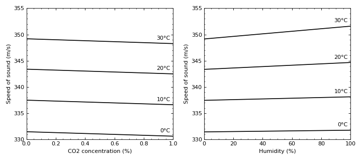

acoular.tools.helpers.c_air¶
- acoular.tools.helpers.c_air(t, h, p=101325, co2=0.04)¶
Calculates the speed of sound in air according to Eq.(15) in [20].
This function calculates the speed of sound in air based on temperature, pressure, relative humidity, and CO2 concentration. To calculate the mole fraction of water vapor in the air,
mole_fraction_of_water_vapor()uses the more recent work of [21] to obtain the saturation vapor pressure.The function is only valid over the temperature range from 0°C to 30°C (273.15 K to 303.15 K), for the pressure range 60 to 110 kPa, a water vapor mole fraction up to 0.06, and CO2 concentrations up to 1%.
- Parameters:
- tfloat
Temperature in (°C).
- hfloat
Humidity in percent (0 to 100).
- pfloat
Atmospheric pressure in Pa (default is the standard pressure 101325 Pa).
- co2float
Carbon dioxide concentration in percent (default is 0.04%).
- Returns:
- float
Speed of sound in air in m/s.
- Raises:
- ValueError
If the temperature is out of range (0°C to 30°C), the pressure is out of range (60 kPa to 110 kPa), the water vapor mole fraction is out of range (up to 0.06), or the CO2 concentration is out of range (up to 1%).
Notes
The speed of sound in air is calculated using the following equation:
\[\begin{split}\begin{aligned} c(t, p, x_w, c_{CO_2}) = & a_0 + a_1 t + a_2 t^2 + \left(a_3 + a_4 t + a_5 t^2\right) x_w \\ & + \left(a_6 + a_7 t + a_8 t^2\right) p + \left(a_9 + a_{10} t + a_{11} t^2\right) x_c \\ & + a_{12} x_w^2 + a_{13} p^2 + a_{14} x_c^2 + a_{15} x_w p x_c \end{aligned}\end{split}\]- where:
\(t\) is the temperature in c.
\(x_w\) is the water vapor mole fraction.
\(x_c\) is the carbon dioxide mole fraction (\(x_c = c_{CO_2} / 100\)).
\(p\) is the atmospheric pressure in Pa.
Examples
Code for reproducing Fig.1 from [20]
import numpy as np import matplotlib.pyplot as plt from acoular.tools import c_air plt.figure(figsize=(9, 4)) plt.subplot(121) for celsius in [0, 10, 20, 30]: c = [] co2_values = np.linspace(0, 1., 100) for co2 in co2_values: c.append(c_air(celsius, 0.0, 101325, co2)) plt.plot(co2_values, c, label=f'{celsius}°C', color='black') plt.ylabel('Speed of sound (m/s)') plt.xlabel('CO2 concentration (%)') plt.xlim(0, co2_values.max()) plt.ylim(330, 355) plt.minorticks_on() plt.tick_params(axis='x', which='both', bottom=True, top=True, direction='in') plt.tick_params(axis='y', which='both', left=True, right=True, direction='in') plt.annotate(f'{celsius}°C', xy=(co2_values[-1], c[-1]), xytext=(-5, 5), textcoords='offset points', ha='right', va='bottom') plt.subplot(122) for celsius in [0, 10, 20, 30]: c = [] humidity_values = np.linspace(0, 100, 100) for h in humidity_values: c.append(c_air(celsius, h, 101325, 0.04)) plt.plot(humidity_values, c, label=f'{celsius}°C', color='black') plt.ylabel('Speed of sound (m/s)') plt.xlabel('Humidity (%)') plt.ylim(330, 355) plt.xlim(0, 100) plt.minorticks_on() plt.tick_params(axis='x', which='both', bottom=True, top=True, direction='in') plt.tick_params(axis='y', which='both', left=True, right=True, direction='in') plt.annotate(f'{celsius}°C', xy=(humidity_values[-1], c[-1]), xytext=(-5, 5), textcoords='offset points', ha='right', va='bottom') plt.tight_layout() plt.show()
